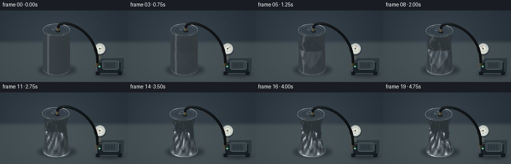
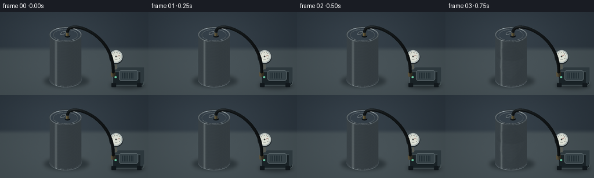
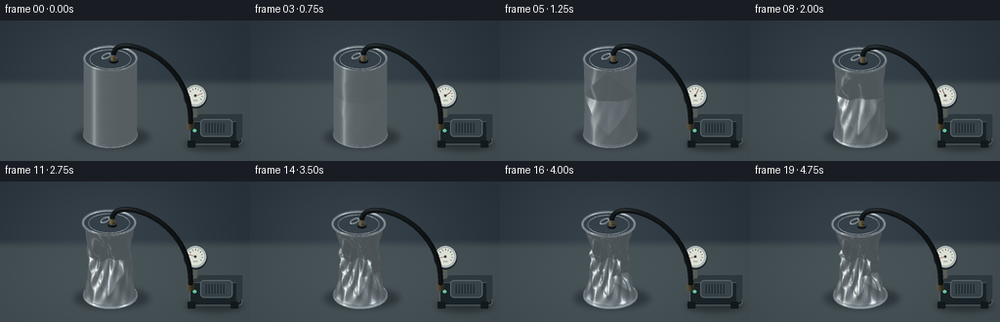

CODING AGENTS AS PIXEL WORLD MODELS
traex/GPT-6.1-Sol · phygen_017
点击播放 · 原生 RGB 像素
逐轮保存的候选
回放视频、检查图与代码变化。
每份候选均可单独播放。实际图片检查记录在下方工具轨迹中。
候选 01播放与检查图
点击播放 · 原生 RGB 像素

展开代码变化
--- 上一保存版本
+++ 本次保存版本
@@ -0,0 +1,267 @@
+"""Procedural RGB rendering of the pressure-driven buckling of a sealed can.
+All mesh construction, lighting and rasterization use only numpy and Pillow.
+"""
+from pathlib import Path
+import json
+import numpy as np
+from PIL import Image, ImageDraw, ImageFilter
+import artifact_io
+
+ROOT=Path(__file__).resolve().parent
+SPEC=json.loads((ROOT/'task_spec.json').read_text())
+W,H=SPEC['width'],SPEC['height']
+SS=3
+SIZE=(W*SS,H*SS)
+# Stationary orthographic camera, elevated enough to see the sealed lid.
+EYE=np.array([5.,-8.,5.])
+F=EYE/np.linalg.norm(EYE)
+R=np.cross(np.array([0.,0.,1.]),F);R/=np.linalg.norm(R)
+U=np.cross(F,R)
+SCALE=27.3
+ORIGIN=np.array([113.,119.])
+LIGHT=np.array([-3.,-4.,7.]);LIGHT/=np.linalg.norm(LIGHT)
+
+
+def project(p):
+ p=np.asarray(p)
+ return np.stack([ORIGIN[0]+SCALE*(p@R),ORIGIN[1]-SCALE*(p@U)],axis=-1)
+
+
+def smooth(a,b,x):
+ t=np.clip((x-a)/(b-a),0,1)
+ return t*t*(3-2*t)
+
+
+def background():
+ yy,xx=np.mgrid[:H*SS,:W*SS]; x=xx/SS;y=yy/SS
+ # Seamless workshop wall and a broad, softly lit matte work surface.
+ horizon=62
+ wall=np.stack([36+0*x,45+0*x,53+0*x],-1).astype(float)
+ glow=np.exp(-((x-110)/123)**2-((y-51)/78)**2)
+ wall+=glow[...,None]*np.array([17,19,20])
+ table=np.stack([58+0*x,68+0*x,72+0*x],-1).astype(float)
+ table+=np.exp(-((x-118)/144)**2-((y-90)/85)**2)[...,None]*np.array([14,15,16])
+ blend=smooth(horizon-4,horizon+7,y)[...,None]
+ col=wall*(1-blend)+table*blend
+ rng=np.random.default_rng(714)
+ grain=rng.normal(0,.37,col.shape[:2])[...,None]
+ col+=grain
+ return Image.fromarray(np.uint8(np.clip(col,0,255)))
+BASE=background()
+
+
+def drawline(draw,pts,fill,width):
+ draw.line([tuple(np.array(p)*SS) for p in pts],fill=fill,width=max(1,round(width*SS)),joint='curve')
+
+
+def ellipse(draw,box,fill,outline=None,width=1):
+ draw.ellipse(tuple(v*SS for v in box),fill=fill,outline=outline,width=max(1,round(width*SS)))
+
+
+def apparatus(im,t):
+ d=ImageDraw.Draw(im)
+ # Compact vacuum pump on the right, deliberately subordinate to the can.
+ d.rounded_rectangle((194*SS,103*SS,248*SS,127*SS),radius=4*SS,fill=(25,34,38),outline=(82,95,98),width=SS)
+ d.polygon([(194*SS,103*SS),(204*SS,96*SS),(248*SS,96*SS),(248*SS,120*SS),(242*SS,127*SS),(242*SS,103*SS)],fill=(45,56,61))
+ d.rounded_rectangle((205*SS,101*SS,238*SS,119*SS),radius=4*SS,fill=(54,66,71),outline=(91,103,107),width=SS)
+ for j in range(7):
+ drawline(d,[(211+j*3,105),(211+j*3,115)],(25,37,43),1)
+ d.rounded_rectangle((192*SS,123*SS,200*SS,130*SS),radius=SS,fill=(18,24,28))
+ d.rounded_rectangle((236*SS,123*SS,244*SS,130*SS),radius=SS,fill=(18,24,28))
+ ellipse(d,(197.5,111,201,114.5),(102,196,159))
+ # The analogue gauge needle rotates towards vacuum.
+ drawline(d,[(200,99),(200,83)],(88,91,84),4)
+ ellipse(d,(188,66,212,90),(32,39,43))
+ ellipse(d,(189,66,211,88),(165,176,176),(200,205,200),.7)
+ ellipse(d,(191,68,209,86),(220,223,212))
+ for ang in np.linspace(-.18*np.pi,1.18*np.pi,11):
+ cen=np.array([200,77]);v=np.array([np.cos(ang),-np.sin(ang)])
+ drawline(d,[cen+7.8*v,cen+6.4*v],(61,66,63),.55)
+ ang=.10*np.pi+smooth(0,.80,t)*.99*np.pi
+ v=np.array([np.cos(ang),-np.sin(ang)])
+ drawline(d,[(200,77),np.array([200,77])+v*6.2],(129,47,38),.75)
+ ellipse(d,(198.7,75.7,201.3,78.3),(58,63,61))
+ drawline(d,[(198,81.7),(202,81.7)],(122,128,123),.5)
+
+
+def shade(normals,pos,base,kind='metal',a=0):
+ n=normals
+ if kind=='rubber':
+ lam=np.maximum(n@LIGHT,0)
+ c=np.array(base)[None,:]*(.52+.58*lam[:,None])
+ h=LIGHT+F;h/=np.linalg.norm(h)
+ c+=np.maximum(n@h,0)[:,None]**30*25
+ return np.clip(c,0,255).astype(np.uint8)
+ if kind=='brass':
+ lam=np.maximum(n@LIGHT,0)
+ refl=2*(n@F)[:,None]*n-F
+ shine=np.maximum(refl@LIGHT,0)**12
+ return np.uint8(np.clip(np.array(base)[None,:]*(.4+.63*lam[:,None])+shine[:,None]*np.array([100,100,70]),0,255))
+ refl=2*(n@F)[:,None]*n-F
+ # Analytic environment reflections: grey studio, large white softboxes,
+ # narrow bright edges, and darker floor reflections. No image textures.
+ sky=smooth(-.8,.9,refl[:,2])
+ c=np.array([54.,63.,68.])[None,:]+sky[:,None]*np.array([59.,61.,62.])
+ l1=np.array([-3.,-4.,5.]);l1/=np.linalg.norm(l1)
+ l2=np.array([5.,1.,4.]);l2/=np.linalg.norm(l2)
+ l3=np.array([-5.,-1.,1.]);l3/=np.linalg.norm(l3)
+ c+=np.maximum(refl@l1,0)[:,None]**7*np.array([110,109,103])
+ c+=np.maximum(refl@l2,0)[:,None]**22*np.array([141,148,153])
+ c+=np.maximum(refl@l3,0)[:,None]**34*np.array([69,73,76])
+ # Broad vertical strip light reflected by curved aluminium.
+ az=np.arctan2(refl[:,1],refl[:,0])
+ strip=np.exp(-((np.arctan2(np.sin(az+2.30),np.cos(az+2.30)))/.16)**2)
+ c+=strip[:,None]*np.array([55,56,53])*(.65+.35*sky[:,None])
+ c*=.87+.13*np.maximum(n@LIGHT,0)[:,None]
+ brush=1.2*np.sin(pos[:,2]*285+np.sin(pos[:,0]*15))+.65*np.sin(pos[:,2]*670+pos[:,1]*18)
+ c+=brush[:,None]
+ if kind=='body':
+ # Minor contact-darkening at tight folds, not a painted crease pattern.
+ c*=1-a*.12*(1-np.abs(n[:,2,None]))
+ return np.uint8(np.clip(c,0,255))
+
+
+def add_mesh(items,vertices,faces,kind='metal',base=(160,170,175),a=0):
+ tri=vertices[faces]
+ n=np.cross(tri[:,1]-tri[:,0],tri[:,2]-tri[:,0]);mag=np.linalg.norm(n,axis=1)
+ good=mag>1e-9
+ tri=tri[good];n=n[good]/mag[good,None]
+ front=n@F>-.015
+ tri=tri[front];n=n[front]
+ centers=tri.mean(1)
+ colors=shade(n,centers,base,kind,a)
+ xy=project(tri)
+ z=centers@F
+ items.append((xy,z,colors))
+
+
+def grid_faces(nv,nt):
+ i,j=np.meshgrid(np.arange(nv-1),np.arange(nt),indexing='ij')
+ k=i*nt+j;l=i*nt+(j+1)%nt
+ return np.stack([np.stack([k,l,k+nt],-1),np.stack([l,l+nt,k+nt],-1)],-2).reshape(-1,3)
+
+
+def tube(items,points,radius,kind='rubber',base=(23,28,30),nt=20):
+ p=np.array(points,float);tangent=np.gradient(p,axis=0);tangent/=np.linalg.norm(tangent,axis=1)[:,None]
+ b=np.cross(tangent,np.array([0.,0.,1.]));bad=np.linalg.norm(b,axis=1)<.001;b[bad]=np.cross(tangent[bad],np.array([0.,1.,0.]))
+ b/=np.linalg.norm(b,axis=1)[:,None];v=np.cross(tangent,b)
+ th=np.arange(nt)*2*np.pi/nt
+ verts=p[:,None,:]+radius*(np.cos(th)[None,:,None]*b[:,None,:]+np.sin(th)[None,:,None]*v[:,None,:])
+ add_mesh(items,verts.reshape(-1,3),grid_faces(len(p),nt),kind,base)
+
+
+def ring(items,center,major,minor,nt=144,nv=12):
+ theta=np.arange(nt)*2*np.pi/nt;phi=np.arange(nv+1)*2*np.pi/nv
+ rr=major+minor*np.cos(phi[:,None]);x=rr*np.cos(theta);y=rr*np.sin(theta);z=minor*np.sin(phi[:,None])+np.zeros_like(x)
+ vertices=np.stack([x,y,z],-1)+np.array(center)
+ # Reverse winding: this parameterization has its outward normals reversed.
+ add_mesh(items,vertices.reshape(-1,3),grid_faces(nv+1,nt)[:,[0,2,1]])
+
+
+def lid(items,c,rad=.928):
+ nt=144;nr=16
+ th=np.arange(nt)*2*np.pi/nt;r=np.linspace(.001,rad,nr)
+ x=r[:,None]*np.cos(th);y=r[:,None]*np.sin(th)
+ z=np.zeros_like(x)+c[2]-.035+.012*(r[:,None]/rad)**2
+ verts=np.stack([x+c[0],y+c[1],z],-1)
+ add_mesh(items,verts.reshape(-1,3),grid_faces(nr,nt))
+ # A shallow concentric pressed channel in the intact end cap.
+ ring(items,[c[0],c[1],c[2]-.025],.77,.012,nt=120,nv=6)
+
+
+def can_geometry(items,t):
+ a=smooth(.10,.87,t)
+ first=smooth(.1,.4,t)
+ second=smooth(.36,.69,t)
+ third=smooth(.61,.88,t)
+ nt=176;nv=91
+ th=np.arange(nt)*2*np.pi/nt
+ v=np.linspace(0,1,nv)
+ T,V=np.meshgrid(th,v)
+ envelope=np.sin(np.pi*V)**.65
+ # Thin-shell pressure collapse: a first broad snap-through dent followed
+ # by staggered angular inward folds. Circular rolled ends remain intact.
+ mid=np.maximum(0,1-np.abs(V-.49)/.48)
+ radius=1-.33*a*envelope
+ def dent(theta,vc,aw,vw,amount):
+ dt=np.arctan2(np.sin(T-theta),np.cos(T-theta))
+ return amount*np.maximum(0,1-np.abs(dt)/aw-np.abs(V-vc)/vw)
+ radius-=first*dent(-1.10,.57,1.25,.42,.37)
+ radius-=second*dent(2.13,.45,1.36,.39,.40)
+ radius-=third*dent(-2.87,.71,.82,.25,.32)
+ radius-=third*dent(.07,.35,.92,.24,.27)
+ # Crease edges rise between the major inward, approximately diamond dents.
+ folds=(.075*np.sin(7*T+V*11)+.038*np.sin(13*T-V*16))*envelope
+ radius+=a*folds
+ radius=np.maximum(radius,.19)
+ # The circumferentially connected sheet also shortens and shifts slightly.
+ height=3.23-.23*a
+ z=.085+height*V+.08*a*envelope*np.sin(3*T+7*V)
+ shiftx=-.10*a*V;shifty=.03*a*V
+ x=radius*np.cos(T)+shiftx;y=radius*np.sin(T)+shifty
+ verts=np.stack([x,y,z],-1)
+ add_mesh(items,verts.reshape(-1,3),grid_faces(nv,nt),'body',a=a)
+ ctop=[-.10*a,.03*a,.085+height]
+ ring(items,[0,0,.09],.98,.047)
+ ring(items,ctop,.979,.046)
+ ring(items,[0,0,.16],.995,.017,nt=144,nv=6)
+ lid(items,ctop)
+ # A closed pull-tab and the airtight adapter through the otherwise sealed lid.
+ # Adapter dark elastomer gasket, followed by a short metal hose coupling.
+ c=np.array(ctop)+np.array([.22,-.12,0])
+ tube(items,[c+[0,0,-.005],c+[0,0,.07]],.163,'rubber',nt=40)
+ tube(items,[c+[0,0,.065],c+[0,0,.27]],.095,'brass',(147,128,79),nt=24)
+ for zz in [.10,.15,.20]:
+ ring(items,c+[0,0,zz],.096,.008,nt=48,nv=6)
+ # Flat, small tab shape away from the adapter.
+ tabc=np.array(ctop)+np.array([-.22,.08,-.005])
+ pts=[]
+ for q in np.linspace(0,2*np.pi,55):
+ pts.append(tabc+np.array([.12*np.cos(q),.24*np.sin(q),.016]))
+ tube(items,pts,.026,'metal',nt=8)
+ return c+[0,0,.27],a
+
+
+def bezier(points,n=65):
+ p=np.array(points);v=np.linspace(0,1,n)[:,None]
+ return (1-v)**3*p[0]+3*(1-v)**2*v*p[1]+3*(1-v)*v*v*p[2]+v**3*p[3]
+
+
+def render(frame):
+ t=frame/(SPEC['frames']-1)
+ im=BASE.copy()
+ # Soft grounded shadows for the can and bench pump.
+ shadow=Image.new('RGBA',SIZE,(0,0,0,0));d=ImageDraw.Draw(shadow)
+ ellipse(d,(76,109,153,130),(7,14,18,103))
+ ellipse(d,(190,121,249,133),(6,12,15,110))
+ shadow=shadow.filter(ImageFilter.GaussianBlur(3.2*SS));im=Image.alpha_composite(im.convert('RGBA'),shadow).convert('RGB')
+ apparatus(im,t)
+ items=[]
+ top,a=can_geometry(items,t)
+ # Thick black hose visibly connects the sealed lid to the extraction pump.
+ # It follows the lowering lid instead of disconnecting during collapse.
+ end=np.array([2.82,1.15,.65])
+ hose=bezier([top+[0,0,.03],top+[.02,.05,1.01],[3.3,.78,3.98],end],n=86)
+ tube(items,hose,.091,'rubber',nt=20)
+ tube(items,[end+[0,0,-.03],end+[0,0,.27]],.14,'brass',(119,108,80),nt=24)
+ xy=np.concatenate([i[0] for i in items]);depth=np.concatenate([i[1] for i in items]);colors=np.concatenate([i[2] for i in items])
+ order=np.argsort(depth)
+ dr=ImageDraw.Draw(im)
+ # Painter's rasterization on a supersampled canvas. Every visible mesh
+ # triangle receives an analytically reflected metallic environment color.
+ coords=xy*SS
+ for k in order:
+ pp=coords[k]
+ if np.max(pp[:,0])<0 or np.min(pp[:,0])>=SIZE[0] or np.max(pp[:,1])<0 or np.min(pp[:,1])>=SIZE[1]:continue
+ dr.polygon([tuple(p) for p in pp],fill=tuple(int(x) for x in colors[k]))
+ return np.asarray(im.resize((W,H),Image.Resampling.LANCZOS),dtype=np.uint8)
+
+
+def main():
+ frames=[]
+ for i in range(SPEC['frames']):
+ frames.append(render(i))
+ print(f'Rendered {i+1}/{SPEC["frames"]}',flush=True)
+ artifact_io.save(np.stack(frames),ROOT)
+
+if __name__=='__main__':main()
候选 02播放与检查图
点击播放 · 原生 RGB 像素


展开代码变化
--- 上一保存版本
+++ 本次保存版本
@@ -101,11 +101,11 @@
# Analytic environment reflections: grey studio, large white softboxes,
# narrow bright edges, and darker floor reflections. No image textures.
sky=smooth(-.8,.9,refl[:,2])
- c=np.array([54.,63.,68.])[None,:]+sky[:,None]*np.array([59.,61.,62.])
- l1=np.array([-3.,-4.,5.]);l1/=np.linalg.norm(l1)
+ c=np.array([94.,103.,108.])[None,:]+sky[:,None]*np.array([52.,54.,55.])
+ l1=np.array([-3.,-4.,.7]);l1/=np.linalg.norm(l1)
l2=np.array([5.,1.,4.]);l2/=np.linalg.norm(l2)
l3=np.array([-5.,-1.,1.]);l3/=np.linalg.norm(l3)
- c+=np.maximum(refl@l1,0)[:,None]**7*np.array([110,109,103])
+ c+=np.maximum(refl@l1,0)[:,None]**9*np.array([112,110,104])
c+=np.maximum(refl@l2,0)[:,None]**22*np.array([141,148,153])
c+=np.maximum(refl@l3,0)[:,None]**34*np.array([69,73,76])
# Broad vertical strip light reflected by curved aluminium.
候选 03播放与检查图

可观测工具轨迹
实际执行的命令与返回图片。
命令 1exit 0
/bin/bash -lc "ls -la && cat prompt.txt && printf '\\n---RULES---\\n' && cat GENERATION_RULES.md && printf '\\n---SPEC---\\n' && cat task_spec.json"
命令 2exit 0
/bin/bash -lc "cat artifact_io.py && python - <<'PY' import importlib.util for s in ['numpy','PIL','scipy']: print(s, bool(importlib.util.find_spec(s))) PY"
命令 3exit 0
/bin/bash -lc "python - <<'PY'
import importlib.util
print('numba', bool(importlib.util.find_spec('numba')))
PY"命令 4exit 0
/bin/bash -lc "cat > generate.py <<'PY'
\"\"\"Procedural RGB rendering of the pressure-driven buckling of a sealed can.
All mesh construction, lighting and rasterization use only numpy and Pillow.
\"\"\"
from pathlib import Path
import json
import numpy as np
from PIL import Image, ImageDraw, ImageFilter
import artifact_io
ROOT=Path(__file__).resolve().parent
SPEC=json.loads((ROOT/'task_spec.json').read_text())
W,H=SPEC['width'],SPEC['height']
SS=3
SIZE=(W*SS,H*SS)
# Stationary orthographic camera, elevated enough to see the sealed lid.
EYE=np.array([5.,-8.,5.])
F=EYE/np.linalg.norm(EYE)
R=np.cross(np.array([0.,0.,1.]),F);R/=np.linalg.norm(R)
U=np.cross(F,R)
SCALE=27.3
ORIGIN=np.array([113.,119.])
LIGHT=np.array([-3.,-4.,7.]);LIGHT/=np.linalg.norm(LIGHT)
def project(p):
p=np.asarray(p)
return np.stack([ORIGIN[0]+SCALE*(p@R),ORIGIN[1]-SCALE*(p@U)],axis=-1)
def smooth(a,b,x):
t=np.clip((x-a)/(b-a),0,1)
return t*t*(3-2*t)
def background():
yy,xx=np.mgrid[:H*SS,:W*SS]; x=xx/SS;y=yy/SS
# Seamless workshop wall and a broad, softly lit matte work surface.
horizon=62
wall=np.stack([36+0*x,45+0*x,53+0*x],-1).astype(float)
glow=np.exp(-((x-110)/123)**2-((y-51)/78)**2)
wall+=glow[...,None]*np.array([17,19,20])
table=np.stack([58+0*x,68+0*x,72+0*x],-1).astype(float)
table+=np.exp(-((x-118)/144)**2-((y-90)/85)**2)[...,None]*np.array([14,15,16])
blend=smooth(horizon-4,horizon+7,y)[...,None]
col=wall*(1-blend)+table*blend
rng=np.random.default_rng(714)
grain=rng.normal(0,.37,col.shape[:2])[...,None]
col+=grain
return Image.fromarray(np.uint8(np.clip(col,0,255)))
BASE=background()
def drawline(draw,pts,fill,width):
draw.line([tuple(np.array(p)*SS) for p in pts],fill=fill,width=max(1,round(width*SS)),joint='curve')
def ellipse(draw,box,fill,outline=None,width=1):
draw.ellipse(tuple(v*SS for v in box),fill=fill,outline=outline,width=max(1,round(width*SS)))
def apparatus(im,t):
d=ImageDraw.Draw(im)
# Compact vacuum pump on the right, deliberately subordinate to the can.
d.rounded_rectangle((194*SS,103*SS,248*SS,127*SS),radius=4*SS,fill=(25,34,38),outline=(82,95,98),width=SS)
d.polygon([(194*SS,103*SS),(204*SS,96*SS),(248*SS,96*SS),(248*SS,120*SS),(242*SS,127*SS),(242*SS,103*SS)],fill=(45,56,61))
d.rounded_rectangle((205*SS,101*SS,238*SS,119*SS),radius=4*SS,fill=(54,66,71),outline=(91,103,107),width=SS)
for j in range(7):
drawline(d,[(211+j*3,105),(211+j*3,115)],(25,37,43),1)
d.rounded_rectangle((192*SS,123*SS,200*SS,130*SS),radius=SS,fill=(18,24,28))
d.rounded_rectangle((236*SS,123*SS,244*SS,130*SS),radius=SS,fill=(18,24,28))
ellipse(d,(197.5,111,201,114.5),(102,196,159))
# The analogue gauge needle rotates towards vacuum.
drawline(d,[(200,99),(200,83)],(88,91,84),4)
ellipse(d,(188,66,212,90),(32,39,43))
ellipse(d,(189,66,211,88),(165,176,176),(200,205,200),.7)
ellipse(d,(191,68,209,86),(220,223,212))
for ang in np.linspace(-.18*np.pi,1.18*np.pi,11):
cen=np.array([200,77]);v=np.array([np.cos(ang),-np.sin(ang)])
drawline(d,[cen+7.8*v,cen+6.4*v],(61,66,63),.55)
ang=.10*np.pi+smooth(0,.80,t)*.99*np.pi
v=np.array([np.cos(ang),-np.sin(ang)])
drawline(d,[(200,77),np.array([200,77])+v*6.2],(129,47,38),.75)
ellipse(d,(198.7,75.7,201.3,78.3),(58,63,61))
drawline(d,[(198,81.7),(202,81.7)],(122,128,123),.5)
def shade(normals,pos,base,kind='metal',a=0):
n=normals
if kind=='rubber':
lam=np.maximum(n@LIGHT,0)
c=np.array(base)[None,:]*(.52+.58*lam[:,None])
h=LIGHT+F;h/=np.linalg.norm(h)
c+=np.maximum(n@h,0)[:,None]**30*25
return np.clip(c,0,255).astype(np.uint8)
if kind=='brass':
lam=np.maximum(n@LIGHT,0)
refl=2*(n@F)[:,None]*n-F
shine=np.maximum(refl@LIGHT,0)**12
return np.uint8(np.clip(np.array(base)[None,:]*(.4+.63*lam[:,None])+shine[:,None]*np.array([100,100,70]),0,255))
refl=2*(n@F)[:,None]*n-F
# Analytic environment reflections: grey studio, large white softboxes,
# narrow bright edges, and darker floor reflections. No image textures.
sky=smooth(-.8,.9,refl[:,2])
c=np.array([54.,63.,68.])[None,:]+sky[:,None]*np.array([59.,61.,62.])
l1=np.array([-3.,-4.,5.]);l1/=np.linalg.norm(l1)
l2=np.array([5.,1.,4.]);l2/=np.linalg.norm(l2)
l3=np.array([-5.,-1.,1.]);l3/=np.linalg.norm(l3)
c+=np.maximum(refl@l1,0)[:,None]**7*np.array([110,109,103])
c+=np.maximum(refl@l2,0)[:,None]**22*np.array([141,148,153])
c+=np.maximum(refl@l3,0)[:,None]**34*np.array([69,73,76])
# Broad vertical strip light reflected by curved aluminium.
az=np.arctan2(refl[:,1],refl[:,0])
strip=np.exp(-((np.arctan2(np.sin(az+2.30),np.cos(az+2.30)))/.16)**2)
c+=strip[:,None]*np.array([55,56,53])*(.65+.35*sky[:,None])
c*=.87+.13*np.maximum(n@LIGHT,0)[:,None]
brush=1.2*np.sin(pos[:,2]*285+np.sin(pos[:,0]*15))+.65*np.sin(pos[:,2]*670+pos[:,1]*18)
c+=brush[:,None]
if kind=='body':
# Minor contact-darkening at tight folds, not a painted crease pattern.
c*=1-a*.12*(1-np.abs(n[:,2,None]))
return np.uint8(np.clip(c,0,255))
def add_mesh(items,vertices,faces,kind='metal',base=(160,170,175),a=0):
tri=vertices[faces]
n=np.cross(tri[:,1]-tri[:,0],tri[:,2]-tri[:,0]);mag=np.linalg.norm(n,axis=1)
good=mag>1e-9
tri=tri[good];n=n[good]/mag[good,None]
front=n@F>-.015
tri=tri[front];n=n[front]
centers=tri.mean(1)
colors=shade(n,centers,base,kind,a)
xy=project(tri)
z=centers@F
items.append((xy,z,colors))
def grid_faces(nv,nt):
i,j=np.meshgrid(np.arange(nv-1),np.arange(nt),indexing='ij')
k=i*nt+j;l=i*nt+(j+1)%nt
return np.stack([np.stack([k,l,k+nt],-1),np.stack([l,l+nt,k+nt],-1)],-2).reshape(-1,3)
def tube(items,points,radius,kind='rubber',base=(23,28,30),nt=20):
p=np.array(points,float);tangent=np.gradient(p,axis=0);tangent/=np.linalg.norm(tangent,axis=1)[:,None]
b=np.cross(tangent,np.array([0.,0.,1.]));bad=np.linalg.norm(b,axis=1)<.001;b[bad]=np.cross(tangent[bad],np.array([0.,1.,0.]))
b/=np.linalg.norm(b,axis=1)[:,None];v=np.cross(tangent,b)
th=np.arange(nt)*2*np.pi/nt
verts=p[:,None,:]+radius*(np.cos(th)[None,:,None]*b[:,None,:]+np.sin(th)[None,:,None]*v[:,None,:])
add_mesh(items,verts.reshape(-1,3),grid_faces(len(p),nt),kind,base)
def ring(items,center,major,minor,nt=144,nv=12):
theta=np.arange(nt)*2*np.pi/nt;phi=np.arange(nv+1)*2*np.pi/nv
rr=major+minor*np.cos(phi[:,None]);x=rr*np.cos(theta);y=rr*np.sin(theta);z=minor*np.sin(phi[:,None])+np.zeros_like(x)
vertices=np.stack([x,y,z],-1)+np.array(center)
# Reverse winding: this parameterization has its outward normals reversed.
add_mesh(items,vertices.reshape(-1,3),grid_faces(nv+1,nt)[:,[0,2,1]])
def lid(items,c,rad=.928):
nt=144;nr=16
th=np.arange(nt)*2*np.pi/nt;r=np.linspace(.001,rad,nr)
x=r[:,None]*np.cos(th);y=r[:,None]*np.sin(th)
z=np.zeros_like(x)+c[2]-.035+.012*(r[:,None]/rad)**2
verts=np.stack([x+c[0],y+c[1],z],-1)
add_mesh(items,verts.reshape(-1,3),grid_faces(nr,nt))
# A shallow concentric pressed channel in the intact end cap.
ring(items,[c[0],c[1],c[2]-.025],.77,.012,nt=120,nv=6)
def can_geometry(items,t):
a=smooth(.10,.87,t)
first=smooth(.1,.4,t)
second=smooth(.36,.69,t)
third=smooth(.61,.88,t)
nt=176;nv=91
th=np.arange(nt)*2*np.pi/nt
v=np.linspace(0,1,nv)
T,V=np.meshgrid(th,v)
envelope=np.sin(np.pi*V)**.65
# Thin-shell pressure collapse: a first broad snap-through dent followed
# by staggered angular inward folds. Circular rolled ends remain intact.
mid=np.maximum(0,1-np.abs(V-.49)/.48)
radius=1-.33*a*envelope
def dent(theta,vc,aw,vw,amount):
dt=np.arctan2(np.sin(T-theta),np.cos(T-theta))
return amount*np.maximum(0,1-np.abs(dt)/aw-np.abs(V-vc)/vw)
radius-=first*dent(-1.10,.57,1.25,.42,.37)
radius-=second*dent(2.13,.45,1.36,.39,.40)
radius-=third*dent(-2.87,.71,.82,.25,.32)
radius-=third*dent(.07,.35,.92,.24,.27)
# Crease edges rise between the major inward, approximately diamond dents.
folds=(.075*np.sin(7*T+V*11)+.038*np.sin(13*T-V*16))*envelope
radius+=a*folds
radius=np.maximum(radius,.19)
# The circumferentially connected sheet also shortens and shifts slightly.
height=3.23-.23*a
z=.085+height*V+.08*a*envelope*np.sin(3*T+7*V)
shiftx=-.10*a*V;shifty=.03*a*V
x=radius*np.cos(T)+shiftx;y=radius*np.sin(T)+shifty
verts=np.stack([x,y,z],-1)
add_mesh(items,verts.reshape(-1,3),grid_faces(nv,nt),'body',a=a)
ctop=[-.10*a,.03*a,.085+height]
ring(items,[0,0,.09],.98,.047)
ring(items,ctop,.979,.046)
ring(items,[0,0,.16],.995,.017,nt=144,nv=6)
lid(items,ctop)
# A closed pull-tab and the airtight adapter through the otherwise sealed lid.
# Adapter dark elastomer gasket, followed by a short metal hose coupling.
c=np.array(ctop)+np.array([.22,-.12,0])
tube(items,[c+[0,0,-.005],c+[0,0,.07]],.163,'rubber',nt=40)
tube(items,[c+[0,0,.065],c+[0,0,.27]],.095,'brass',(147,128,79),nt=24)
for zz in [.10,.15,.20]:
ring(items,c+[0,0,zz],.096,.008,nt=48,nv=6)
# Flat, small tab shape away from the adapter.
tabc=np.array(ctop)+np.array([-.22,.08,-.005])
pts=[]
for q in np.linspace(0,2*np.pi,55):
pts.append(tabc+np.array([.12*np.cos(q),.24*np.sin(q),.016]))
tube(items,pts,.026,'metal',nt=8)
return c+[0,0,.27],a
def bezier(points,n=65):
p=np.array(points);v=np.linspace(0,1,n)[:,None]
return (1-v)**3*p[0]+3*(1-v)**2*v*p[1]+3*(1-v)*v*v*p[2]+v**3*p[3]
def render(frame):
t=frame/(SPEC['frames']-1)
im=BASE.copy()
# Soft grounded shadows for the can and bench pump.
shadow=Image.new('RGBA',SIZE,(0,0,0,0));d=ImageDraw.Draw(shadow)
ellipse(d,(76,109,153,130),(7,14,18,103))
ellipse(d,(190,121,249,133),(6,12,15,110))
shadow=shadow.filter(ImageFilter.GaussianBlur(3.2*SS));im=Image.alpha_composite(im.convert('RGBA'),shadow).convert('RGB')
apparatus(im,t)
items=[]
top,a=can_geometry(items,t)
# Thick black hose visibly connects the sealed lid to the extraction pump.
# It follows the lowering lid instead of disconnecting during collapse.
end=np.array([2.82,1.15,.65])
hose=bezier([top+[0,0,.03],top+[.02,.05,1.01],[3.3,.78,3.98],end],n=86)
tube(items,hose,.091,'rubber',nt=20)
tube(items,[end+[0,0,-.03],end+[0,0,.27]],.14,'brass',(119,108,80),nt=24)
xy=np.concatenate([i[0] for i in items]);depth=np.concatenate([i[1] for i in items]);colors=np.concatenate([i[2] for i in items])
order=np.argsort(depth)
dr=ImageDraw.Draw(im)
# Painter's rasterization on a supersampled canvas. Every visible mesh
# triangle receives an analytically reflected metallic environment color.
coords=xy*SS
for k in order:
pp=coords[k]
if np.max(pp[:,0])<0 or np.min(pp[:,0])>=SIZE[0] or np.max(pp[:,1])<0 or np.min(pp[:,1])>=SIZE[1]:continue
dr.polygon([tuple(p) for p in pp],fill=tuple(int(x) for x in colors[k]))
return np.asarray(im.resize((W,H),Image.Resampling.LANCZOS),dtype=np.uint8)
def main():
frames=[]
for i in range(SPEC['frames']):
frames.append(render(i))
print(f'Rendered {i+1}/{SPEC[\"frames\"]}',flush=True)
artifact_io.save(np.stack(frames),ROOT)
if __name__=='__main__':main()
PY
python generate.py"命令 5exit 0
/bin/bash -lc "python - <<'PY' p='generate.py' s=open(p).read().replace(\"c=np.array([54.,63.,68.])[None,:]+sky[:,None]*np.array([59.,61.,62.])\", \"c=np.array([94.,103.,108.])[None,:]+sky[:,None]*np.array([52.,54.,55.])\") s=s.replace(\"l1=np.array([-3.,-4.,5.]);l1/=np.linalg.norm(l1)\", \"l1=np.array([-3.,-4.,.7]);l1/=np.linalg.norm(l1)\") s=s.replace(\"**7*np.array([110,109,103])\", \"**9*np.array([112,110,104])\") open(p,'w').write(s) PY python generate.py"
命令 6exit 0
/bin/bash -lc "python - <<'PY'
from pathlib import Path
import numpy as np
p=np.load('pixels.npz')['pixels']
assert p.shape == (144,256,20)
assert len(list(Path('frames').glob('*.png'))) == 20
for f in ['generate.py','pixels.npz','index.html','inspection.png']:
print(f, Path(f).stat().st_size, 'bytes')
PY"视觉工具实际返回图片 1

视觉工具实际返回图片 2

保存候选 3 份；完成命令 6 次；可验证图片返回 2 张。原始 API 响应与完整日志保留在本地。